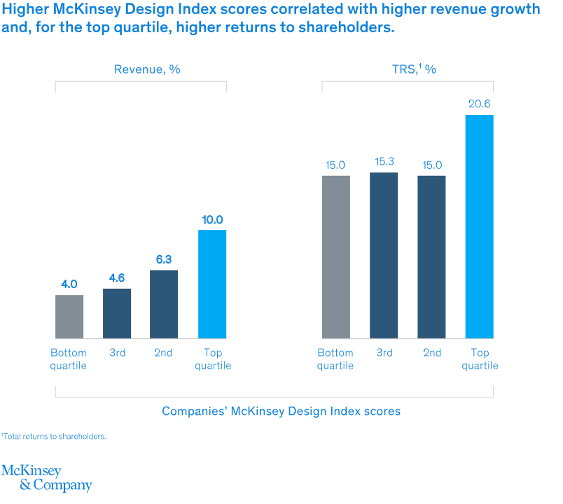

UX/UI Design · FinTech
Why FinTech Companies Need Dedicated UX Teams
(not "a designer when we have time")
In FinTech, UX is not decoration. It is how trust gets built, how mistakes get prevented, and how product, engineering, and compliance stop working against each other.
People outside fintech sometimes talk about UX as if it sits somewhere between branding and polish. That has never matched what I have seen.
Early in my time at Citadel, I watched analysts, portfolio managers, and traders work across six to eight monitors filled with applications that were supposed to support the same workflows. The problem was not just visual inconsistency. It was operational inconsistency. Colors meant different things from app to app. Context menus behaved differently. Layouts shifted. Alerts competed for attention. Teams built their own patterns in isolation, often without talking to users and sometimes without talking to each other.
The result was predictable. Users had to keep stopping, re-orienting, and mentally translate the product in front of them before they could do the actual work. In a consumer app, that is frustrating. In a high-speed financial environment, it is risk.
We pushed to create a shared front-end foundation with common components, shared interaction patterns, clear semantic color meaning, reusable layouts, and project templates that handled the repeated plumbing. That gave teams a consistent starting point and let engineers spend more of their time on business logic instead of rebuilding the same basics over and over. More important, it gave users a system they could learn once and trust across products.
That is the core of this argument. Dedicated UX teams in fintech do not exist to make screens look nicer. They exist to reduce ambiguity, protect trust, improve speed to market, and make sure the product behaves like one company built it on purpose.
FinTech UX is operating infrastructure, not decoration
McKinsey's well-known design study found that top-quartile design performers outpaced industry peers by 32 percentage points in revenue growth and 56 percentage points in total returns to shareholders over five years. That does not mean every polished interface wins. It means companies that treat design as a managed, cross-functional capability tend to execute better.
Visual 2: McKinsey design value chart

Show: Revenue growth and shareholder return lift for strong design performers.
In fintech, those gains are not abstract. Bad UX turns into abandoned onboarding, support volume, trading mistakes, missed disclosures, avoidable compliance exposure, and duplicate engineering work. Good UX does the opposite. It clarifies risk. It shortens time to proficiency. It reduces the number of moments where a user has to stop and wonder what the system is trying to tell them.
I have seen that firsthand in internal trading and research platforms too. When dense workflows are rebuilt with better hierarchy, stronger defaults, and progressive disclosure, teams spend less time fighting the interface and more time using it. That sounds obvious. It is still rare.
Visual 3: Dashboard before and after

Show: A cluttered multi-panel dashboard next to a hierarchy-driven redesign.
Why fintech feels the pain faster than other industries
Most companies can survive some interface friction. Fintech has less room for error. Users are being asked to hand over identity documents, connect accounts, move money, understand fees, evaluate risk, and trust that the company is handling all of it responsibly. When the interface feels confusing, people do not read that as a small product issue. They read it as a trust issue.
That is one reason dedicated UX matters so much here. In financial products, design has to hold several things together at once: speed, clarity, safety, compliance, and confidence. That work compounds over time. It cannot be handled well by dropping a designer into a sprint after the hard decisions have already been made.
Onboarding is where fintech quietly burns acquisition spend
Signicat reported that 68% of consumers abandoned a financial application during onboarding in 2022, up from 63% in 2020. Exact drop-off will vary by market and product, but the pattern is familiar across the industry. The first experience is usually where the product asks the most from the user while giving the least back.
That is why onboarding deserves dedicated design attention. It is not just a form flow. It is the moment where product promise meets real-world friction: password rules, document capture, identity verification, timeouts, unclear requirements, fee anxiety, and the simple question every user is asking in the background. Is this worth it, and can I trust you?
Visual 4: Onboarding funnel diagram

Show: Funnel from first touch to retained user with the highest-friction moments labeled by stage.
- Landing page clarity and value proposition
- Account creation friction and avoidable validation errors
- KYC and document upload confusion
- Funding hesitation driven by trust, fees, or delay
- Retention drop when first-run experience lacks momentum
This is also where design systems matter more than people expect. If every team builds forms, validation, disclosures, and verification steps differently, users experience the company as inconsistent long before they ever become customers. That inconsistency leaks into completion rates, support demand, and trust.
Visual 5: Onboarding conversion impact

Show: A simple visual that reinforces how small improvements across onboarding stages can compound into meaningful conversion gains.
The hidden cost of "we'll fix UX later"
Teams often talk about UX as if it can be layered on after requirements, architecture, and release plans are already set. In practice, that approach is expensive. By the time confusion shows up in production, the cost is no longer a design cost. It becomes engineering rework, training time, documentation load, support volume, and operational risk.
Nielsen Norman Group has argued for years that investing in usability early returns value because the gains are not limited to aesthetics. Better usability improves task success and helps prevent avoidable waste. In complex financial products, that argument gets stronger, not weaker.
I would add one more practical point. Dedicated UX teams create leverage for engineering. When core patterns live in a shared system, product teams do not have to debate every button, every alert treatment, every table behavior, or every layout from scratch. Consistency stops being a hopeful guideline and becomes a capability.
When UX fails in fintech, people get hurt
In financial services, poor UX is not just inconvenient. It can mislead people about price, risk, consent, or control. That is one reason regulators have paid more attention to dark patterns and disclosure design.
The FTC's report Bringing Dark Patterns to Light describes how interfaces can trick or pressure people into actions they would not otherwise take. The CFPB has separately warned that negative-option and subscription-style patterns can become unlawful when material terms are not clearly disclosed, informed consent is not obtained, or cancellation is unnecessarily difficult.
This is not theoretical. Regulators have already acted on design-linked conduct, including FINRA's 2021 sanctions against Robinhood, Massachusetts' 2024 settlement over digital engagement practices, the FTC's action against Vonage over cancellation dark patterns, and the CFPB's 2024 lawsuit against SoLo Funds. Different products. Same lesson. Interface decisions can become legal and financial exposure.
Visual 7: Dark patterns in financial services

Show: Annotated examples such as hidden fees, misleading opt-ins, buried disclosures, and obstructive cancellation flows.
Visual 8: Regulatory attention timeline

Show: Timeline highlighting how design, disclosure, and engagement mechanics increasingly draw regulatory scrutiny.
- 2021: FINRA announces record sanctions against Robinhood tied in part to misleading communications and supervisory failures
- 2022: FTC settles with Vonage over subscription dark patterns and junk fees
- 2024: Massachusetts settles with Robinhood and restricts certain digital engagement practices
- 2024: CFPB sues SoLo Funds, alleging deceptive lending and dark-pattern behavior
Accessibility is basic product quality
FinTech products often rely heavily on tables, charts, color, status changes, forms, and time-sensitive interactions. Those are exactly the places where accessibility failures show up. A gain or loss signal that depends on color alone, a chart with no text equivalent, or a verification flow that breaks keyboard navigation is not a minor issue. It blocks use.
W3C's WCAG guidance remains the clearest baseline, and WebAIM's checklist is still one of the most useful implementation references for teams. In practice, though, fintech needs to go beyond treating accessibility as a compliance checklist. It should be built into component design, design reviews, and release gates.
Visual 9: Accessibility checklist for fintech UX
Show: A checklist focused on fintech-specific accessibility risks.
- Do not rely on color alone for gains, losses, warnings, or status
- Make tables and charts understandable with text and structure
- Ensure forms, KYC steps, and verification flows work with keyboard navigation
- Use clear labels, instructions, and error recovery
- Support accessible live updates for dynamic data
In-house vs outsourced is really a question about context
Outsourcing can help with speed, bandwidth, or a specific specialist skill set. I have used external partners before and there is value there. But the real tradeoff in fintech is not simply cost. It is whether the product context, workflow knowledge, and compliance sensitivity live inside the company or outside it.
In-house teams build institutional memory. They learn how your customers behave, where support friction actually comes from, what your compliance teams worry about, which handoffs repeatedly fail, and where the product road map keeps introducing risk. That knowledge compounds. It becomes part of the way the company ships.
My bias is straightforward. Use external help where it makes sense. Keep product UX leadership, research, systems, and core workflow design close to the business.
Visual 10: In-house vs outsourced comparison

Show: Side-by-side comparison of continuity, context, speed, and strategic ownership.
What a dedicated fintech UX team actually does
A real UX team is not a ticket-taking service. It is an operating function with authority. In a healthy fintech organization, that usually means four things working together.
Visual 11: Dedicated fintech UX team structure

Show: Org map with the core capabilities needed to make UX durable in fintech.
- Research: interviews, testing, analytics, and journey work grounded in real users
- Design systems: shared components, standards, tokens, patterns, and handoff rules
- Embedded product design: designers working inside squads on real product decisions, not just final screens
- Compliance-aware review: disclosure clarity, dark-pattern checks, accessibility, and high-risk flow review before release
The important word is dedicated. When UX only appears after a roadmap is locked, after architecture is chosen, or when something visibly breaks, the organization is signaling that it does not really see design as part of product quality. It sees it as cleanup.
What changes as AI gets deeper into fintech
AI will make this more important, not less. As products introduce AI-assisted support, personalization, fraud detection, workflow suggestions, and decision support, the design problem gets harder. Users will need clear explanations, confidence signals, fallback paths, and obvious control over when the system is helping versus deciding.
The next generation of fintech UX is not just about cleaner screens. It is about making complex systems understandable enough to trust. That takes product thinking, design discipline, and close partnership with engineering from the start.
Visual 12: AI in fintech experience shift

Show: A forward-looking visual to reinforce that AI increases the importance of clarity, explanation, and user control.
The bottom line
If a fintech company treats UX as "a designer when we have time," it is choosing unnecessary friction as an operating model. It is making product harder to learn, engineering harder to scale, compliance harder to defend, and trust harder to earn.
Dedicated UX teams do something simpler and more valuable. They make the product easier to understand, safer to use, and more consistent across the moments that matter most. In fintech, that is not extra work. It is part of the job.
Chris McGuire is a product, UX, and engineering leader with 20+ years of experience building systems that bridge user needs, design rigor, and software delivery. He writes about fintech design, AI-powered tools, and product execution at paguire.com.